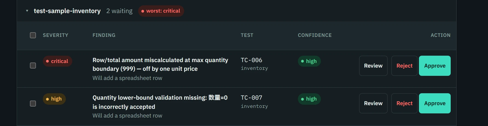
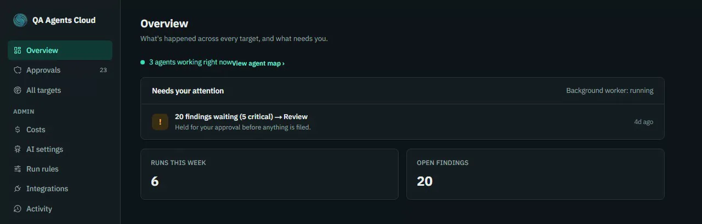
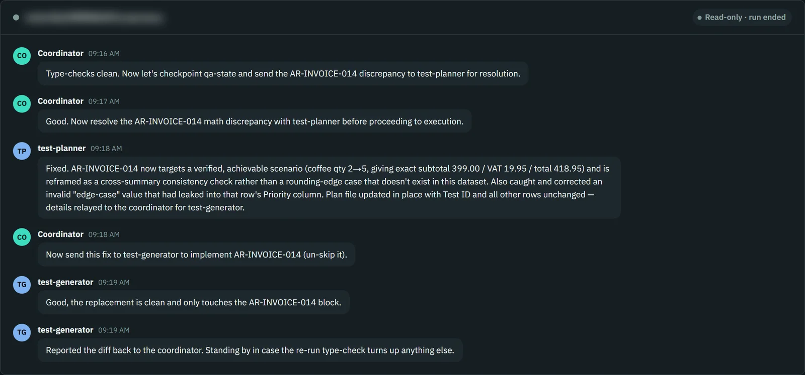
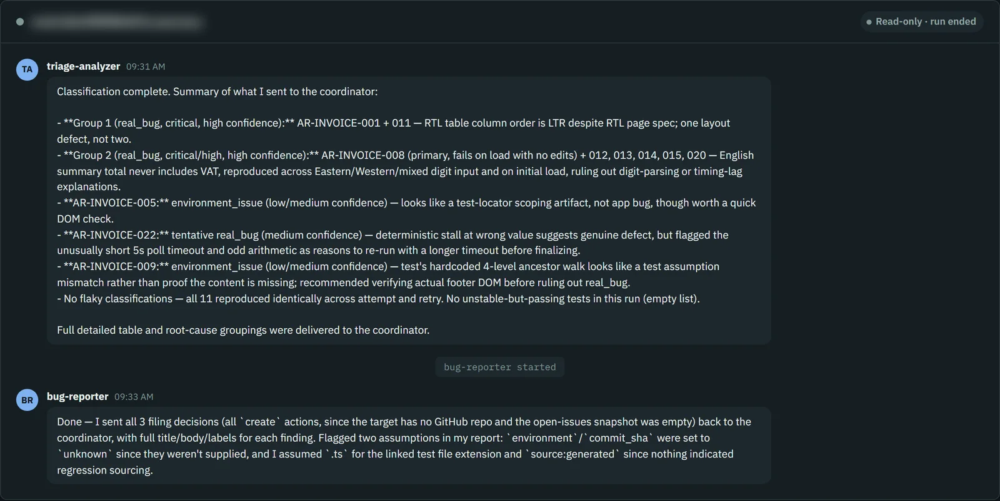
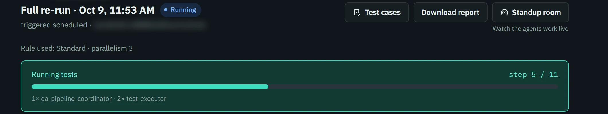
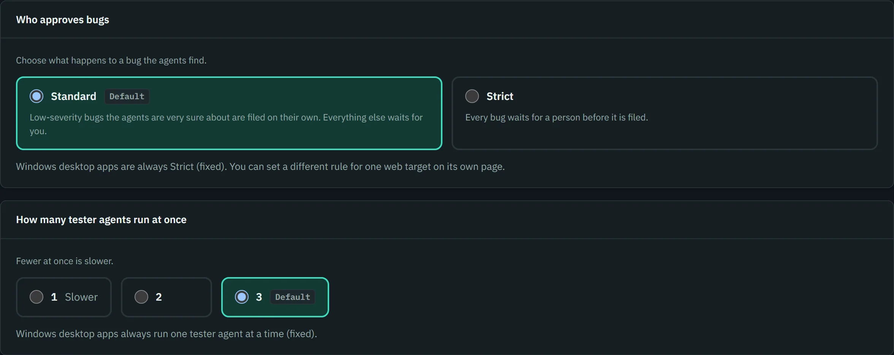
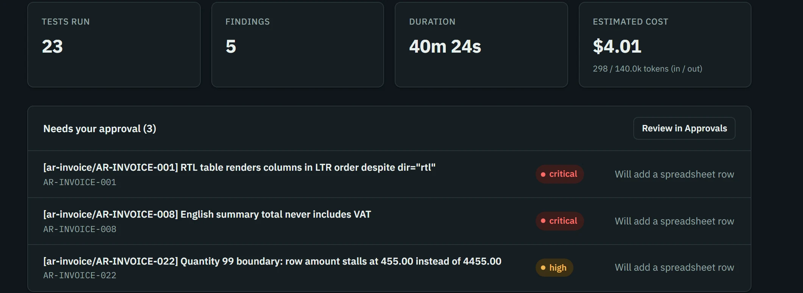
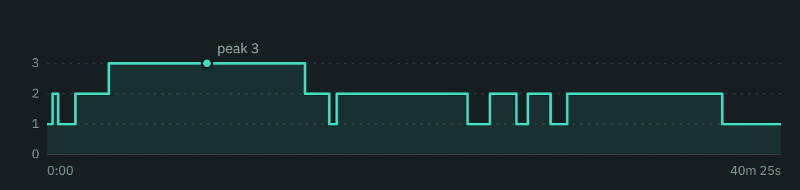
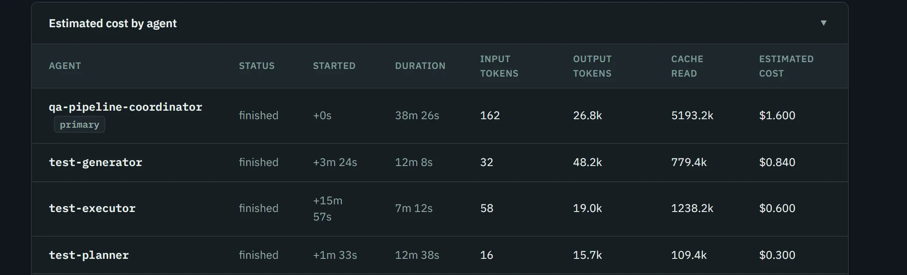

Approvals
A person decides what gets filed, as strictly as you choose.
STRATEGY, AI & IT CONSULTING — GLOBAL, REMOTE-FIRST
Hamingcs pairs strategy and hands-on leadership with AI/data expertise and the systems, security, and DevOps architecture needed to put ambition into production — and keep it there.
01 — AI & DATA
Building and running AI and data functions inside large organizations — from first strategy to global teams.
02 — SYSTEMS & SECURITY
Enterprise systems, cloud/SaaS transformation, and security architecture engineered for scale.
03 — STRATEGY & LEADERSHIP
Hands-on ownership of budget, global teams, and market strategy — comfortable with a P&L of any size, proven at director and CTO level with a 300-person team spanning the US, EU, Japan, China, and the Middle East.
WHY THREE DISCIPLINES
Most AI initiatives don't fail on the model. They fail on the system underneath it — or the strategy and leadership that never turned the plan into a running function.
I've spent my career across all three: setting AI and data strategy at the leadership level, owning the P&L and team that deliver it, and — from the same technical grounding — architecting, reviewing, and securing the systems that have to carry it.
Hamingcs exists because those conversations are usually happening in different rooms, and shouldn't be.
MY BACKGROUND
Two decades of enterprise experience, earned on the way up — not assembled from a slide.
Since 2006
Automotive diagnostic software, in Java.
Data models, work split across teams, root-cause analysis in production.
Enterprise systems, designed to carry load.
Budget, P&L and delivery.
Technology and strategy at leadership level.
Customers and teams across the US, Europe, Africa, the Middle East, Japan and China.
It started hands-on: building automotive diagnostic software in Java, then leading the architecture behind it — defining data models, distributing work across teams, and tracing production defects back to root cause when something didn't hold.
That technical grounding is what later underwrote the leadership: managing P&L on a project, then scaling into director and CTO-level ownership of an AI and data function — 300 people across the US, EU, Japan, China, and the Middle East, business and market strategy included, plus leading the cloudification and digitalisation of the technology stack underneath it. Hamingcs combines strategy, delivery, and security under one practice, in the order they were actually learned.
FOUNDER INTERVIEW
Answers by the Founder
Why Hamingcs
AI projects
QA Agents Cloud
If this is how you want to work, let's talk.
Start a conversationHOW I APPROACH STRATEGY
Before any solutioning, I frame the actual business problem — not the symptom the organization first brings me.
Two or three real strategic paths, stress-tested against likely market, competitor, and internal responses before a euro or a headcount is committed.
Once a direction is set, I take operational ownership of it — budget, team, and delivery — not just the recommendation.
Roadmaps get revisited against real market signal, the way a strategy built while penetrating new markets has to — not filed away after the kickoff.
HOW I WORK
I don't hand over a slide deck and leave. Recommendations come with an honest view of what it takes to run them.
Threat modeling and release architecture are typically part of the first design conversation, not a review at the end.
Global and remote-first, with direct experience across European, Asian, and Middle Eastern operating environments.
SERVICES
I work across the full path from strategy to running system — engage me for any one discipline, or all three.
AI & DATA
AI strategy consulting that starts with an honest assessment of where AI creates real value in your operations — and where it doesn't — followed by a roadmap your teams can actually execute.
Hands-on leadership for building or scaling an AI or data function, including fractional CTO engagements: hiring, structure, budget and P&L ownership, and operating cadence.
Designing the data vision, models, and governance an organization needs before AI initiatives can be built on top of it reliably.
Independent, hands-on review of code, technical designs, and AI-generated outputs — catching flawed assumptions and correctness gaps before they ship, not after.
Copilots, retrieval-augmented assistants, and workflow automation built on large language models — scoped to problems worth solving, not novelty demos.
Putting risk, oversight, and compliance frameworks in place as AI regulation (like the EU AI Act) catches up with deployment.
SYSTEMS & SECURITY
Moving on-premise products to multi-region SaaS deployments — including the operational model to support and monitor them once live.
Building release pipelines that support frequent, reliable delivery across multiple product versions, at enterprise scale.
Threat modeling, code scanning, and internal security testing that can be built into the release cycle rather than bolted on afterward.
Test classification and automation strategy that scales with a growing codebase instead of slowing it down.
Readiness assessments against frameworks like SOC 2 and ISO 27001, with a practical remediation plan rather than a checklist to file away.
Reviewing cloud architecture and spend as usage grows, so infrastructure scales without the bill quietly outpacing it.
STRATEGY & LEADERSHIP
Turning market and technology signals into a strategy the business can actually execute — including where I take direct ownership of it.
Full financial ownership of a function or programme, at any scale — budgeting, forecasting, and cost control, from lean project budgets to a large, multi-region P&L, not just a recommendation on a slide.
Building and leading distributed teams across regions: hiring, structure, and operating cadence, drawn from scaling a function to 300 people across the US, EU, Japan, China, and the Middle East.
Defining go-to-market and driving penetration into new markets and customer segments, including direct experience opening accounts across China, Japan, and the EU.
Acting as innovation advisor to enterprise clients and internal stakeholders — from first idea to a funded, resourced initiative.
Structuring university and research collaborations, including PhD placements, that feed real capability into a commercial team.
HOW THE WORK IS DONE
Hamingcs has no subcontractors. I'm the person you meet, and I'm accountable for what you receive.
Where a task is repeatable, I give it to an AI agent (AI coding agents do the engineering work, under my review), and I review the result before it reaches you.
Each role can run as several agents at once, when the work needs it.
The longer explanation, with what is automated and what stays human: I built a QA team out of AI agents, and gave it a rule it can't skip.
HOW I ENGAGE
Retained strategy input for AI, data, and security decisions as they come up.
Start a conversationA hands-on strategy, AI, data, or systems lead inside your organization — including full P&L and team ownership while you build the function.
Start a conversationA defined engagement against a specific outcome — an architecture, an audit, a migration.
Start a conversationAI agents test your web app from your specifications, and a person decides which bugs get filed.
See the pilotQA AGENTS CLOUD
QA Agents Cloud is the AI-assisted QA testing product I built and run myself. Give it the address of your web application. A small team of AI agents plans the tests, writes them and runs them, then writes up each bug it finds: the steps to reproduce, what it expected and what actually happened. A person decides which bugs get filed to GitHub Issues or Jira Cloud, or exported as a CSV file, and you choose how strict that is.
Everything below comes from a run on a sample application, not from a customer.
A run on a sample application, in under two minutes.
Want to see it live with your own questions? Email me and I'll set up a short walkthrough.
Ask for a walkthroughA coordinator agent plans the run and hands the work to specialists. A planner prepares the test plan from your specification, a generator writes the tests, and an executor runs them. A triage agent sorts real bugs from environment problems and says how sure it is, and a reporter writes up each bug with a title, description and labels. When something doesn't add up, such as a test case that can't pass, the coordinator sends it back to the right agent to fix before the run continues. The Standup room keeps the whole conversation, so you can read how each result was reached before you approve anything.

How a target is set up, and where approved bugs can go: GitHub Issues, Jira or a CSV download. Shown on a sample application.
A recorded, read-only transcript of a finished run.




A person decides what gets filed, as strictly as you choose.




See an estimate of what each agent costs.
The first step is a paid, fixed-scope pilot on your web application. Scope and fee are agreed in writing before it starts, and I make no promises about results. Windows desktop testing is proven on a sample application, not yet with a customer.
FAQ
How engagements start, how I work, and how confidentiality is handled.
CONTACT
Whether it's a strategy question, an AI/data challenge, a systems and security review, or all three — get in touch directly.